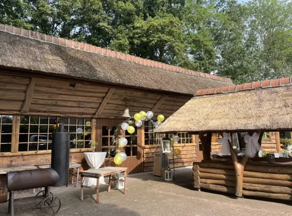
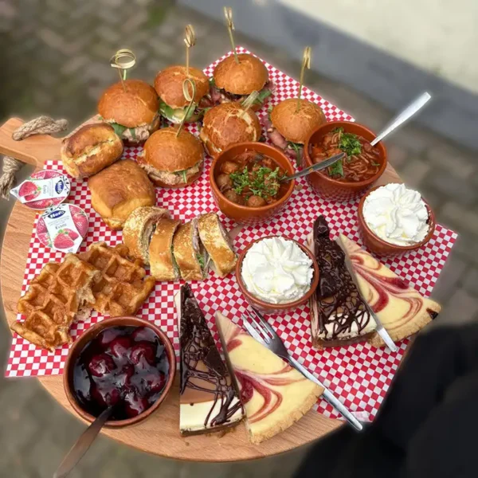
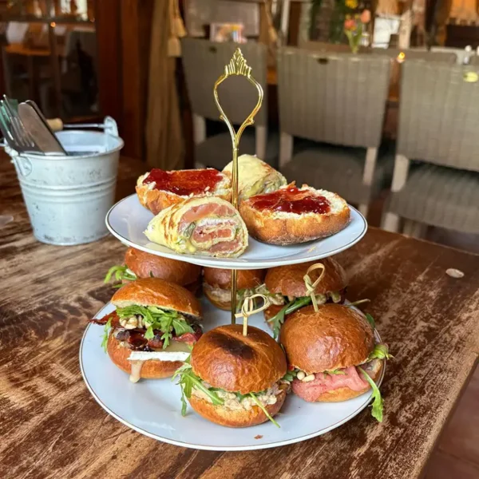
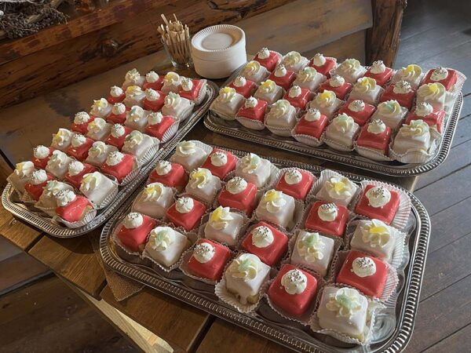
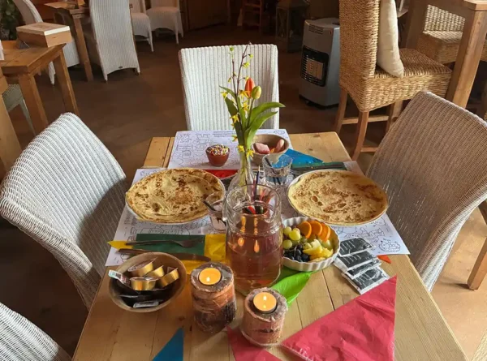
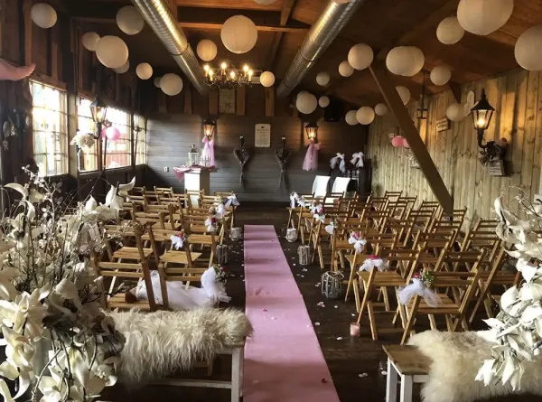
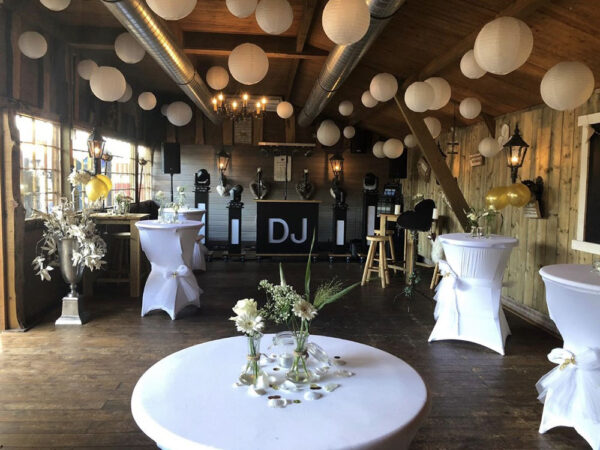
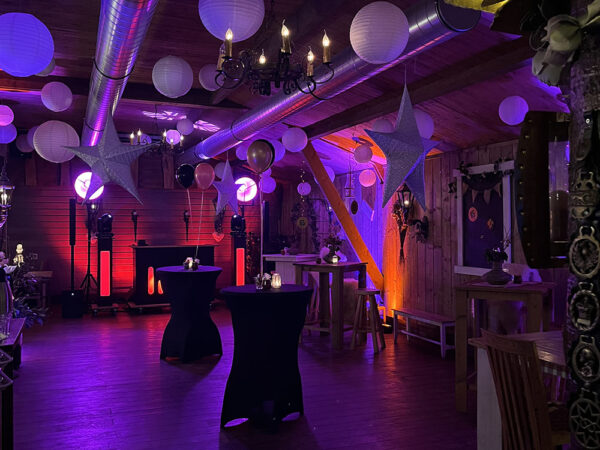
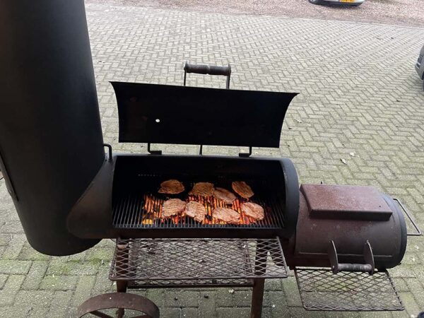

De Lingewaelse € 19,95
Pannenkoek met advocaat van de boerderij, vanille-roomijs en een toef slagroom
Pannenkoekhuis in Vuren
Genieten van ambachtelijk gebakken, overheerlijke pannenkoeken in een prachtige landelijke omgeving? Dan bent u bij Pannenkoekhuis Het Lingebosch aan het juiste adres.
Ma, wo en do 16.00 tot 20.00 uur, vr t/m zo 12.00 tot 20.00 uur
Bij ons worden de pannenkoeken al ruim 25 jaar nog echt traditioneel in de pan gebakken, volgens een geheel eigen en bijzonder (geheim) recept. Zoet of hartig, gewone eierpannenkoeken of een van onze specialiteiten die het proeven zeker waard zijn. Daarnaast bakken we heerlijke Oud Hollandse poffertjes.
Ook aan wie niet van pannenkoeken houdt is gedacht: we hebben een kleine kaart met onder andere boerentosti's, uitsmijters en een overheerlijke kipsaté uit eigen keuken. En voor na het eten: ambachtelijk boerderij-ijs van de Jersey koe.
Neem plaats in ons sfeervolle restaurant of, bij mooi weer, op het terras.
Geniet van het moment en eet smakelijk! Team Lingebosch


Al onze pannenkoeken, poffertjes en andere hap zijn af te halen. Alles gaat goed verpakt in speciale pannenkoekdozen mee, zodat de pannenkoeken lekker warm en smakelijk blijven, zelfs als u wat verder weg woont. Bestellen kan telefonisch of via WhatsApp; wij zorgen dat alles op de afgesproken tijd klaarstaat. Is het heel erg druk, dan bellen we u even wanneer de pannenkoeken in de pan gaan.


Kom ook eens genieten van ons High Tea arrangement. Naast onbeperkt thee serveren wij een mini soepje, heerlijke belegde broodjes en diverse zoete hapjes, dus smullen maar! Neem samen met familie of vrienden plaats in ons sfeervolle restaurant, of bij mooi weer op het terras, en laat u verrassen.
Alleen na reservering via 0183 661299 of reserveringen@hetlingebosch.nl.
High tea reserverenEen unieke, prachtig groene locatie met sfeervolle ruimtes: de Nieuwe Dheel en de Oude Schuur. Ze kunnen voor grotere gezelschappen geschakeld worden en sluiten aan op het gezellige terras. Zowel binnen als buiten zijn alle faciliteiten om uw feest vorm te geven. Heeft u wensen en ideeën? Wij denken graag met u mee.

Hoe leuk is het om je eigen pannenkoek te versieren? Ieder kind krijgt een eigen naturel pannenkoek die ze helemaal zelf mogen opmaken, met onder andere smarties, rice crisps, snoepjes, Nutella, jam en vers fruit. Hoe kleurrijker, hoe beter!
En om het feestje goed af te sluiten krijgt ieder kind twee bollen ijs met slagroom. De smaken mogen ze natuurlijk zelf kiezen.
€ 15,50 per kind
Dit arrangement is speciaal voor kinderen. Reserveren of meer weten? Bel 0183 661299 of mail feestenhetlingebosch@gmail.com.

Op zoek naar een gezellige, landelijke trouwlocatie? Kom gerust de locatie bekijken en de sfeer proeven. Onder het genot van een drankje bespreken we vrijblijvend uw wensen en mogelijkheden, en daarna ontvangt u een conceptofferte om thuis rustig na te lezen.

Een unieke en groene locatie voor uw bedrijfsfeest, met de Nieuwe Dheel en de Oude Schuur. We denken graag met u mee en doen er alles aan om uw bedrijfsfeest te laten slagen.

Verschillende sfeervolle ruimtes zijn te huur voor een gezellige feestavond. Met een sta- en zitgedeelte past de locatie bij ieder gezelschap.

Naast pannenkoeken kunt u bij ons terecht voor een heerlijke BBQ, met diverse arrangementen die naar wens aan te passen zijn. Wij nemen het BBQ'en volledig uit handen: onze kok bereidt het vlees langzaam op de Super Smoker BBQ, zodat de rooksmaak behouden blijft.
Voor een afspraak, de BBQ-arrangementen of meer informatie over bruiloften, bedrijfsfeesten en feestlocatie huren:
06 40 67 51 93 feestenhetlingebosch@gmail.comGezellige sfeer, heerlijke pannenkoeken, de keuze is reuze, wat wil je nog meer. Vriendelijke behulpzame bediening. Na een wandeling met de hond in het Lingebosch even langs voor een drankje met kleine versnapering of uitgebreid dineren.
De lekkerste pannenkoeken uit de wijde omtrek! Prachtige locatie, erg vriendelijk personeel en eigenaren. Ook zeer geschikt voor een familiefeestje.
We gaan er al jaren met veel plezier een heerlijke pannenkoek eten! Vriendelijk personeel en er hangt altijd een leuke sfeer.
De locatie is prachtig, de bediening is super vriendelijk en het eten is heerlijk. Na ons trouwen zijn wij uiteraard regelmatig teruggeweest om heerlijk te dineren.
Wij hebben onze mooie bruiloft mogen vieren in Pannenkoekenhuis Het Lingebosch. We kijken hier met heel veel blijdschap op terug!
| Maandag | 16.00 – 20.00 |
| Dinsdag | gesloten |
| Woensdag | 16.00 – 20.00 |
| Donderdag | 16.00 – 20.00 |
| Vrijdag | 12.00 – 20.00 |
| Zaterdag | 12.00 – 20.00 |
| Zondag | 12.00 – 20.00 |
Onze keuken sluit om 19.30 uur.
Op zoek naar een leuke bijbaan? Stuur een berichtje naar info@hetlingebosch.nl of bel 0183 661299.